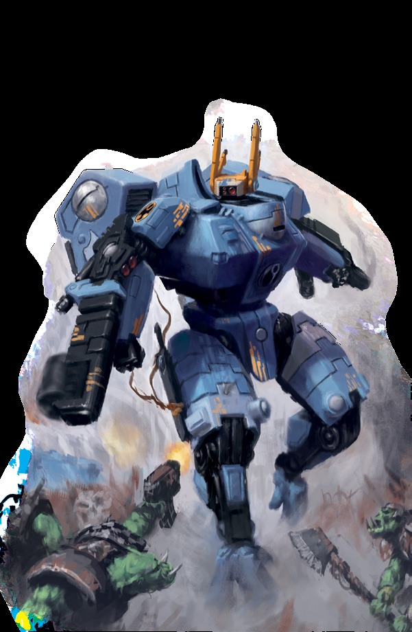
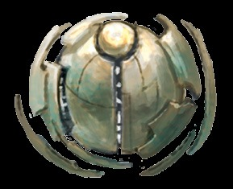

“很久以前，当我还是一名夏斯'拉时，我曾在诺莫洛斯河的冲积平原上战斗过。我的小队被压制了，我们严重减员。似乎我们做出最后牺牲的时刻已经到来。我们站在鸠’拉的大军面前，雅备好面对我们的结局。失败已然注定，我们决定为了上上善道而牺牲。
但随后，我拾起头看见了指挥官，像一颗赤色彗星般划过天际，他点亮武器。他砸进敌军阵中，他一人对抗一整支军队·然而，他带着十足的胜利决心而战。一阵欢呼声在队伍中响起，而当我们为火氏族和钛帝国的荣耀奋勇向前之时，这阵欢呼变成了咆哮。”——一副指挥官星枪，于塞恩远征中
火氏族最伟大的英雄们是那些穿着强大的，装甲覆盖的战斗服冲进战场的人。火氏族的骄傲有赖于它的战斗服驾驶员，只因战斗服是钛帝国最重要的象征之一。
在这些机器之中，火氏族的成员可以亲眼见证创造力战胜了野蛮，进取心战胜了自满。一名坐在这些机器中的战斗服驾驶员能够经受住那些最严酷的环境，掠过虚空消灭他以其他方式永远无法战胜的敌人。
战斗服在大小和力量上有着相当大的变化范围，而不同的驾驶员也会以完全不同的方式配置他们的武器平台。虽然X8危机战斗服是使用最广泛的战斗服，但钛帝国之中也有许多不同的变体在被使用着，因此个别战斗服驾驶员通常会根据其猎核的确切需求对自己的机器进行改装或改装。一些驾驶员最适合灵活的XW25隐形战斗服，而其他驾驶员则因为这些笨重的机器可以带来的令人难以置信的火力而更适合操控X88舷炮战斗服。
战斗服驾驶员通常被分配与让他能以最大效率服务于上上善道的战斗服型号，然后对基础机架进行客制化以帮助他们执行任务。然而，随着驾驶员声望和荣誉的增长，他们常常会被授予更先进的战争装备，以帮助他们以上上善道的名义完成更加不可思议的事迹。
如果一名战斗服驾驶员被分配到他的指挥官的萨兹纳米，又或称为保镖队的编制中，那么他很可能已经成为了一名历战老兵，在运动战方面有着丰富的经验，并配备了一套非常适合适合他所倾向的战斗风格的战争装备。
最伟大的指挥官和战士们被分配了实验性武器，甚至至是完全独一无二的战斗服。这样的原型机已经扭转了许多钛帝国在没有战斗服驾驶员干预的情况下可能会遭受惨败的战斗的潮流。
这些创新性的发明例如影阳指挥官的22战斗服、欧'维萨定制的X104激流驾驶阵列以及十二个强大的重弩拳套等等，都是土氏族交付给火氏族冠军们的强大技术研发产品。在他们令人尊敬的使用者手中，这件装备已然成为了编织钛帝国内传奇故事的来源，因为英雄们用来完成他们最伟大事迹的工具和武器皆与他们的故事息息相关。
然而，清汐指挥官的箴言历经数个世纪仍响彻不息：“秉持剑之心，远胜于依赖利刃。”尽管其装备具备致命威胁，但唯有驾驶员精湛的技艺方能充分发挥装备之效能。

| 提升 | 花费 | 类型 |
|---|---|---|
| 飞控（个人） | 100 | 技能 |
| 飞控（个人）+10 | 200 | 技能 |
| 守护者 | 200 | 天赋 |
| 飞控（个人）+20 | 300 | 技能 |
| 进阶战斗服训练 | 300 | 天赋 |
| 净化之火 | 300 | 天赋 |
| 双重射击 | 300 | 天赋 |
| 独立瞄准 | 300 | 天赋 |
| 刚毅线圈 | 300 | 天赋 |
| 轻身坠 | 400 | 天赋 |
| 狂怒突击 | 400 | 天赋 |
| 快速反应 | 500 | 天赋 |
| 一敲就好 | 500 | 天赋 |
| 才华横溢（飞控） | 500 | 天赋 |
| 能手飞行员 | 750 | 天赋 |
| 灵活侧步 | 750 | 天赋 |
| 无私典范 | 800 | 天赋 |
| 空育门徒 | 800 | 天赋 |
| 历战反应 | 1000 | 天赋 |
所需职业：钛族火战士
替代等级：等阶5或更高{17,000p)
要求：敏捷45
其他要求：火氏族的成员必须达到夏斯'钨等级，并对证明自己配得上穿着强大的战斗服的荣誉。一旦他达成了条件，他必须接受与驾驶战斗服相关的大量训练，然后才有资格在战场上被分配使用一件战斗服。
| 类型 | 前置条件 |
|---|---|
| 技能 | 飞控（个人） |
| 技能 | 飞控（个人）+10 |
| 天赋 | 敏捷40 |
| 技能 | 飞控（个人）+20 |
| 天赋 | 敏捷40，飞控（个人）+10 |
| 天赋 | 火焰武器训练（通用） |
| 天赋 | 敏捷40，双持客 |
| 天赋 | 弹道技能40 |
| 天赋 | 敏捷30 |
| 天赋 | 武器技能35 |
| 天赋 | 敏捷40 |
| 天赋 | 智力30 |
| 天赋 | 敏捷40，驾驶（任意） |
| 天赋 | 敏捷40，闪避 |
| 天赋 | 团结之刃仪式，指挥+10 |
| 天赋 | 团结之刃仪式 |
| 天赋 | 敏捷45，才华横溢（飞控） |
前置条件：敏捷40，飞控（个人）+10
对于一名熟练的驾驶员来说，战斗服就像他的第二层皮肤，为穿着者在几乎没有牺牲机动性和灵巧性的情况下提供了令人难以置信的进攻能力和坚不可摧的保护。
这个探索者不再因为他所驾驶的任何战斗服的尺寸特质给试图命中他的敌人提供命中奖励了。
前置条件：敏捷45，才华横溢（飞行员）
最好的钛族战斗服驾驶员可以以其他人无法想象的方式使用他们的战斗服。他们对战斗服动力系统的控制如此精确，他们的反应如此敏锐。以至于在驾驶着巨大的装甲时，他们实际上可以超越他们血肉之躯的限制，以他们在战斗服之外无法实现的优雅在充斥着混乱的战斗中做出反应。
这位探索者可以使用他的飞控（个人）技能代替他的特技、闪避和招架技能来进行他在驾驶战斗服时被要求进行的任何检定。
